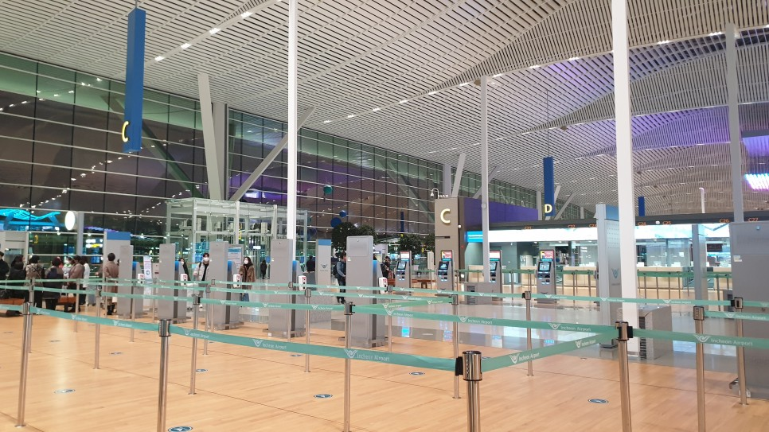

The First Week at UC Berkeley
도착한지 딱 일주일 째, 아직은 모든게 새롭지만 너무 재밌다. 적응해가는 과정 자체가 너무 즐겁고 행복하다. 하나하나 모두 새로운 느낌을 받는건 정말 오랜만에 느껴보는 것 같다. 첫 컨텐츠로 출국부터 버클리에서의 첫 주를 사진과 함께 소개하려고 한다.
출국

인천공항 제2터미널

한산한 출국장 면세점
공항은 정말정말 한산했다. 면세점에는 직원이 한 명씩 밖에 없었고, 음식점은 모두 영업을 하지 않고 있었다. 카페가 하나 둘 정도 엉업 중이었다. 쾌적해서 공항이용은 정말 편했다.
도착

비행기에서
샌프란시스코 공항 사진을 찍는 것을 깜빡했다. 입국심사를 기다리는데 진을 좀 빼기도 했고, 그때까지만해도 사진을 하나하나 다 찍어둬야 할 필요를 못 느꼈었다. (지금은 너무도 필요하지만…)
SAF에서 제공되는 공항픽업은 멋쟁이 흑인 아저씨가 담당해주셨다. 굉장히 세련된 패션에 BMW7을 몰면서 차 멋지냐고 물어보는 모습이 굉장히 인상깊었다. 만나자마자 이것저것 물어보시며 스타트업 코스를 듣는다고 하니 스톡옵션 어떻냐며 농담도 주고받고 굉장히 기분 좋은 시작이었다. 아저씨는 나에게 ’You are good. Keep positive!’라며 격려를 아끼지 않았다.
아저씨는 차로 가는 동안 딸과 통화를 했다. 통화가 끝나고 나에게 부모님께 ‘I love you’를 얼마나 자주하는지 물어봤다. 나는 한국인은 거의 그러지 않는다고 답하니, 굉장히 안타까워하며 자기가 어떻게 하는지 보여주겠다고 바로 딸에게 전화를 걸어 ‘Honey, I love you’를 말했다. 그러자 딸이 ‘Oh, I love you too, dad’로 화답했다. 그리곤 ‘See? easy.’ 내가 노력해보겠다고 하니 ’No try, just do it.’이라며 가족을 사랑해야 한다고 말했다. 전화 자주 해야지.
숙소의 첫 인상

Suite 거실

트리플 룸

수납장, 인당 2개가 할당되는 수준이었다.
일단 들어가자 마자 룸메이트 이름을 확인했고, 같이 가는 한국인 남학생을 제외하고는 모두 중국인이었다. 내심 아시안끼리 묶지 않길 바랬지만, 뭐 어쩌겠는가. 이미 입주해있던 중국인 친구는 서구권 친구들이랑 살아봤는데 아시안끼리 사는게 편하다고 그랬다.
캠퍼스 외부에 있는 Wesley House라는 기숙사를 이용하게 됐다. Suite라는 큰 방 하나에 5개의 트윈 ~ 트리플 룸이 5개 있는 구조였다. 화장실은 3개였고, 주방과 거실은 충분히 넓어보였는데, 만약 15명이 산다고 생각하면 좀 좁을 것 같은 인상이었다.

1층 멀티미디어 룸, 대충 메인 로비같은 느낌
숙소는 4층으로 구성되어 있고, 1층은 공용공간과 오피스, 4층에는 스터디룸과 테라스가 있다.

스터디룸. 전기 코드 사용이 좀 불편하다. 저기 벽에 콘센트 박혀있는 게 보이는가…

테라스인데 바베큐 그릴이 있다. 아마 파티같은 거 하지 않을까?
숙소는 꽤 뷰 맛집이다. 근데 일단 고층건물이 없어서 대부분의 건물 옥상에서 샌프란시스코 베이까지 쫙 열려있는 뷰를 볼 수 있다.

안개가 껴서 그렇지 샌프란시스코 베이가 보인다.

루프탑에서 찍은 다른 풍경
룸메이트
이미 한 학기를 다닌 중국인 학생이 입주해있었고, 내가 두번째였다. 그리고 중국인 친구가 2명 더 들어오고, 한 방은 중국인 커플한테 배정이 됐다고 알려주더라. 한국인 친구는 나랑 같은 방을 쓰게 됐다. 혼성으로 한 Suite을 쓰는 것부터 굉장히 아메리카스럽다고 느꼈다.
나는 일단 친구를 너무 사귀고 싶어서, 숙소에서 새로운 얼굴이 보인다 싶으면 바로바로 말을 걸었다. 한 중국인 친구는 Haas Business Program을 듣는 친구였는데, 점심을 같이 먹으면서 중국 사회에 대한 이야기를 해주길래 굉장히 흥미롭게 들었다.
여담으로 몇 가지 새롭게 알게된 사실이 있는데, 중국은 Gap year, 휴학하는 학생을 굉장히 이상하게 여긴다는 것이었다. 휴학 기간에 대한 증명을 해내지 못하면 노동시장에서 외면받는다며, 만나는 중국 친구들 전부 학교에서 졸업을 해야 한다고 한 학기만 수학하고 돌아갈 예정이라고 답했다. 또, 대부분 석사를 노리고 있었는데, UC Berkeley에서 추천서를 받아서 활용할 계획이라고 했다.
캠퍼스

유명한 게이트인데, 이름은 까먹었다.

멀리 보이는 버클리 상징인 시계탑

캠퍼스 내 공원

날 좋을 때 공원에서

고풍스러운 건물. 어딘진 모름
과연 캠퍼스는 정말 이쁘고 아름다웠다. 스케일도 커서 건물 사이사이에 개울이 흐르거나 작은 숲이 있기도 했다. 그리고 아침에 러닝해보니 캠퍼스 둘레가 3.5키로정도 되더라.

정문

학교 근처의 스트라다 카페. 레몬에이드로 유명하고 학생들 모임 장소로도 유명하다.

야외 좌석들. 저 뻘건 가로등 같은 것은 다 난로다. 다 불타는 중.

러닝하면서 매일 만나는 Berkeley Haas Business 건물
마주친 모습들
나는 한국에서 갤럭시 노트9을 쓰고 있었는데, 미국에 오니 로밍이고 유심이고 하나도 안되서 졸지에 데이터 미망인이 되고 말았다. 그래서 바로 아이폰을 구매하기로 결정하고, 주변도 둘러볼 겸 애플스토어까지 40분 정도 걸어갔다.

미국 가정집들
가는 길은 전부 주택가였고, 집 하나하나 모두 미국 드라마에서 튀어나온 것 같은 가정집이었다. 주말 아침이라 차를 닦는 아저씨도 있었고, 개와 산책하는 할머니, 유모차를 끌고 나온 어머니부터 다양한 사람들을 마주칠 수 있었다. 창문 너머로는 아침을 준비하는 모습도 잠깐잠깐 보였다.

동네 주민들끼리 식사하는 모습
가는 길에 공원이 있었는데, 정말 만감이 교차했다. 저런 모습을 언제쯤 봤었나, 나에겐 저런 기억이 언제 있었나. 주말 아침 모든 가족이 동네 공원에 나와서 서로 이런저런 이야기를 주고받으며 브런치를 먹고, 아이들은 자유롭게 뛰어놀고 있었다. 서울에서는 절대 볼 수 없는 모습이었다. 과연 가족과의 시간을 중시하는 미국이라는 생각도 새삼 들었다. 열심히 일하는 이유가 가족이랑 시간을 보내기 위함이지 암.

버스에 자전거 싣는 모습
버클리는 굉장히 자전거 친화도시다. 버스 앞에 무슨 철제범퍼도 아닌 것이 달려있는데, 자전거 싣는 공간이었다.
밥
도착 당일에는 바로 피자를 한 조각 먹었는데, 얼굴만한 사이즈에 매우 기름졌다. 한 조각에 7달러 줬다. 미국 Bay Area의 물가를 바로 체감한 순간.
중국친구들이 베이커리를 가자며 검색해서 별점이 가장 높은 집을 선택했는데, 빠바였다. 세상 모든 음식이 미국화되는 미국에서는 샌드위치도 과연 사이즈가 미국다웠다. 점심으로 먹었는데 저녁도 안먹을 수 있는 수준이었다. 샌드위치는 8달러 정도 줬다.

레스토랑

Why do you look at me?

얼굴만한 팬케익
아메리칸 스타일 아침을 먹고 싶어서 러닝하고 오픈한 레스토랑을 찾았다. 메뉴가 죄다 스페인어라 좋아보이는 거 하나를 골라 시켰는데, 얼굴만한 팬케익이 3개 나타났다. 아무것도 안바르고 그냥 먹으면 정말 텁텁하고 맛이 존재하지 않더라. 시럽을 듬뿍 붓고 먹으면 달고, 버터는 짰다. 과연 아메리카. 반 먹고 그냥 나왔다. 이거 음식 값만 15달러, 세금에 팁까지 18달러정도 준거 같다.

팟타이
학교 주변에는 아시안 음식점이 굉장히 많았다. 저녁 늦게 밥을 먹게 되서 처음으로 배달을 시켜봤는데, 저 팟타이가 음식 값만 13달러고, 배달료에 팁, 세금까지 더 얹어줬다. 비싸다.

찜통에서 수분을 먹었지만 꽤 준수했던 부리또
한 날은 모닝커피와 간단한 주전부리를 노리고 픽업오더를 시도해봤다. Snackpass라는 앱을 추천받아서 사용했는데, 새로 생긴 앱인지 이것저것 리워드도 달려있고 쿠폰 시스템이 내장되어 있었다. 아무튼 저 부리또는 성공적. 이거 다해서 7달러 남짓 줬던 것 같다.

버클리의 유명한 또 다른 카페, 피츠커피

ㅋㅋㅋ 커피가 가장 로열합니다.

비건 베이글과 시그니쳐 음료 츄로 라떼
에브리띵 베이글이 그렇게 맛있고, 모두의 아침식사라길래 메뉴판에서 에브리띵과 베이글만 보고 주문했다. 그런데 에브리띵 플랜트 베이스 베이글이었고, 졸지에 비건 치즈, 비건 패티, 비건 에그를 먹게 됐다. 그런데 예상 외로 꽤 맛있었다. 그래도 다시 안 사먹을 예정.

태국 음식을 먹었는데, 레스토랑에서 밥 먹으면 물가는 이 정도한다.
쇼핑, 쇼핑, 쇼핑
미국 유학생이라면 학교 이메일로 아마존 프라임 학생버전을 6개월간 무료로 사용할 수 있다. 한국에서 쿠팡쓰던 버릇이 남아 대부분의 생필품은 모조리 아마존으로 주문을 때리고, 쇼핑하러 갈 겸 중국인 친구 한명과 한국인 5명에서 이케아까지 걸어갔다.

광명 이케아가 더 넓고 좋았다.

같이 간 친구들
첫 만남
UC Berkeley에서 국제 학생들을 대상으로 진행한 첫 공식행사에 참가했다. 미국 교육 스타일에 대해서 이미 버클리에서 국제프로그램을 수학한 학생들이 팁을 주고 질의응답을 하는 자리였다. 굉장히 유익한 자리였지만 더 중요한 이벤트가 있었다. 줌 채팅으로 프로그램별 단체방이 만들어졌고, 거기서 바로 당일에 맥주를 마시자는 약속이 생겼다. 한국 룸메이트와 함께 바로 뛰쳐나갔다.

얼굴이 너무 재밌게들 나와서 잘랐다 ㅎㅎ
우리 테이블은 독일인 친구들이 있었고, 나중에 브라질 친구들도 합류했다. 놀랍게도 40명이 넘게 모였는데 동아시아 인은 우리 둘 뿐이었다. 아무튼 맥주 한 두잔씩 걸치니 서로 너무 재밌게 이야기 할 수 있었다.
독일 친구들은 맥주를 어마어마하게 마신다. 잘 마시냐고 물어보면 ’You know, I’m German’으로 받아친다. 그리고 국적별로 술부심도 부리면서 장난치는 모습이 귀여웠다. 시덥잖은 농담도 주고받으며, 서로 UC Berkeley에 오면서 품은 목표를 진지하게 이야기하기도 했다. 너무 즐거운 경험이었고, 서로 인스타그램 아이디를 주고받으며 계속 만나자는 말을 주고 받았다.
한국 나이를 이야기하니까 정말 혼란스러워하면서 굉장히 신기해했다. ’그럼 생일을 기념하는거야 1월 1일을 기념하는거야’를 물어보더라. 또 BTS 덕에 한국 남자들 군대 가는건 다 알고 있었다. ’군대 갔다온거면 너 제복 있어?’라며 물어보던 친구도 있었다. 재밌는 반응들. 아무래도 우리나라 특유의 무언가를 이야기하는건 대화 오프너로써 좋은 듯 싶다.
OT
첫 2주를 비대면으로 하게 되면서 많은 이벤트들이 온라인으로 전환됐다. 특히 모든 프로그램 오티가 전부 비대면이 됐는데, 내 프로그램만 유일하게 대면으로 진행되었다. 아마 스타트업에 관심있는 사람들이 모인 프로그램이라 네트워킹을 챙겨주려는 목적이 아니었을까.

정말 많이 도와준 우리 Ricardo… 메일 폭탄에도 친절했다.

오티 장면
주요 내용들은 이 프로그램에서 어떤 기회를 제공하는지에 대한 설명이었다. 미국의 법률이 까다롭고, 스타트업으로써 지켜야 할 IP와 같은 재산과 관련된 사항은 Berkeley 법대에서 자문을 받을 수 있다. Berkeley와 관련된 수많은 펀드들에 IR 피치를 하거나 소개받을 수 있는 기회가 굉장히 많으니 시도하라고 했다. 그 외에도 실리콘밸리는 항상 열려있으니 자신을 어필하고 접촉하는 것을 적극 권장했다.
SCET 내에서 제공하는 모든 코스에는 industrial 경험이 있는 강사들만 있다. 특히 Richard Newton Lecture Series에서는 저명한 인사들을 초빙해 이야기를 듣고, 질의응답을 자유롭게 주고받을 기회를 제공한다고 한다. 그래서 단순히 수업만 들을 것이 아니라, 어떤 질문을 할지 고민해보고 기회가 된다면 이력서를 전달하는 기회도 노려보라는 언급을 했다. 작년에 폴카닷 창업자 개빈 우드, 대체육 기업인 임파서블 푸드의 공동창업자 패트릭 브라운 등이 연사로 참여했다.
모든 것은 능력과 시도에 달려있지만, 기회는 어디든 열려있다는 언급했다. 특히 여기서는 제로코스트로 창업하고, 실패하는 것을 언제든지 경험 할 수 있고 누구도 말리지 않으며 오히려 적극 권장한다고 말했다.
자기소개 시간도 있었다. 바로 실전투입 당했다. 엘리베이터 피치를 한다면 이런 느낌일까, 나는 전공이랑 관심분야 후다닥 어필했던 것 같다. 그리고 일부러 수트를 입고 갔는데, 확실히 눈에 좀 띄는게 좋은 것 같다. 나중에 바에서 만났을 때 ’오 너 수트 멋졌다. 기억난다’라면서 바로 알아보며 대화를 이어갔다.

점심 시간에 다들 둘러앉아 이런저런 이야기를 하는 모습
나는 프로그램 내에서 유일한 한국인이었다. 대충 40명 가량이 모였는데, 절반은 프랑스의 어떤 비즈니스 스쿨과 연계된 Le Bridge 프로그램에서 왔다. 그래서 강의실 절반이 전부 프랑스 친구들이었고, 서로 굉장히 친해보였다. 스페인 발렌시아에서 석사과정을 밟고 있는 창업가들이 한 8명 정도 왔다. 스페인 친구들은 전부 이미 자기 비즈니스를 하고 있는 상황이었다. 그 외에 태국, 홍콩, 인도, 중국 정도가 소수였던 것 같다.

1차로 간 바

2차로 간 바
40명 중에 대충 절반 정도가 저녁에 바에서 만남을 가졌고, 거기 아시안은 나 혼자 뿐이었다. 스페인 친구들과 어울려서 이런저런 이야기를 나눴다. 창업을 한 친구들이라 그런지 만나자 마자 바로 ’What’s your picture? What do you have your vision here?’하면서 바로 진지한 이야기로 들어갔다. 그래서 서로 여기 온 목적, 현재 비스니스, 왜 창업했고 어떤 거 하는지, 제품은 뭔지 이런저런 이야기를 나눴다.
사람이 남는다

잔디밭은 축축하다. 꼭 돗자리를 지참할 것
여기 만남은 캐주얼하다. 약속도 굉장히 러프하게 잡는 편이고, 특히나 만날 장소가 캠퍼스 근처라면 만나기 전에 대충 잡아버린다. 중간 장소에서 만나서 어디갈까, 커피라도 마실까 그제서야 정한다. 그래도 만나자는 말을 던지면 어떻게든 만나긴 한다. 빈말은 안한다.

나는 이런 자연스러운 샷이 좋다.
서구권 친구들은 그냥 얼굴보는 목적만으로 만나도 함께 있는 그 시간 자체를 즐긴다. 걱정도 크게 없어보이고 평화롭다. 모두들 하하호호 웃으며 가벼운 스몰톡만 주고 받으며 누구보다 긍정적인 태도를 유지한다. 서로의 문화에 자부심도 있고, 전혀 모르는 남의 이야기에 최초의 호감은 기꺼이 드러낸다.
다들 왜 이럴까 생각해봤다. 이런 만남의 본질은 무엇일까, 결국은 무엇이 남을까 고민하면, 서로의 인상이 남는 것 같다. 누군가는 자신의 전문성을 강조하고, 누군가는 관심분야를 어필한다. 이성적인 매력을 뿜을 때도 있고, ’나랑 놀면 넌 누구보다 재밌게 놀 수 있을거야’라는 분위기를 풍기는 친구들도 있다. 그 인상들이 서로의 기억에 남아 가볍게 얼굴 보자고 만난 사이를 발전시키는 계기가 되는 것 같다. 호의적으로 만나 관계를 열고, 서로를 알아가고, 각자의 매력에 따라 자연스럽게 이어지는 인연을 지향한다는 느낌을 받았다.

ㅋㅋㅋㅋ 어디다 대고 적을지 고민하기 싫어서 바로 등을 ㅋㅋㅋ
1년의 계획은 곡식을 심는 것만 한 것이 없고, 10년의 계획은 나무를 심는 것만 한 것이 없으며, 일생의 계획은 사람을 심는 것보다 더한 것이 없다. - <관자>
정말 좋아하는 문구다. 아무것도 모르던 때에도 사람을 계속 만나려고 노력했던 나를 떠올려보면, 아마 이 말을 본능적으로 알고 있었지 않았을까 싶다. 여기 버클리에선 누구보다 ‘사람’ 하나는 많이 만나봤고 좋은 인연을 정말 많이 만들었다고 말할 수 있으면 좋겠다.
내 이야기를 쓰는 이유

미국으로 가는 비행기에서
학생 때 교환학생을 갔어야 했어
사회에서 여전히 대학생인 나를 보면 인생 선배님들은 이 말을 꼭 한마디씩 하셨다. 정말 많이 들었던 것 같다. 다녀온 분들은 정말 좋았던 경험에 대한 이야기보단 해보지 못한 것들에 대한 후회, 더 잘하지 못한 것들에 대한 아쉬움을 더 많이 이야기하셨다. 그리고 ’그 때로 돌아가서 다시 가고싶다’는 말을 예외없이 하셨다.
내가 더 나은 결정을 하길 바라는 마음에서 해주신 말씀이었을 것이다. 그래서 나는 미래에 나같은 학생을 만나 ’학생 때 교환학생을 갔어야 했어’라는 말을 하는 내 모습을 상상했다. 그리고 나는 지금이 아니면 할 수 없는 일을 하자고 다짐했다.
이런 글을 쓰는 이유는 교환학생을 꿈꾸는 친구들에게 내 이야기를 전하고, 서로 긍정적인 영향을 주고 받는 든든한 네트워크를 구축하는 계기가 됐으면 하는 바람이다. 나의 이야기가 대단한 경험은 아니지만, 글이 유려하지도 않지만 누군가는 이 글을 읽고 자신만의 교환학생 이야기를 써내려 갈 수 있으면 좋겠다.